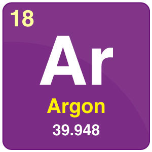

kokusuz ve tatsız bir gazdır. Soy gazlardandır
8. grup elementlerinde 3. sıradadır. Sanayide gazla doldurulan elektrik lambalarında yaygın olarak kullanılır. Proton sayısı 18'dir. Dünya atmosferinde % 1'den az oranda bulunmakta ve böylece en yaygın soy gaz olmaktadır.
En dış elektron kabuğu dolu olup diğer kimyasal elementlerle bağ yapmaya karşı dirençlidir.
Termodinamik denge noktası (triple point) sabit sıcaklığı 83.8058 K olarak 1990 yılında Uluslararası Sıcaklık Ölçümü (ITS) ile tanımlanmıştır. Oksijen gazının sudaki çözünürlüğü ile aynı çözünürlüğe sahiptir ve bu da nitrojen gazının sudaki çözünürlüğünden 2,5 kat daha fazladır.
Yüksek kararlılığı olan kimyasal element renksiz, kokusuz, tatsız ve toksit değildir hem sıvı hem gaz fazı için.
geri dön
